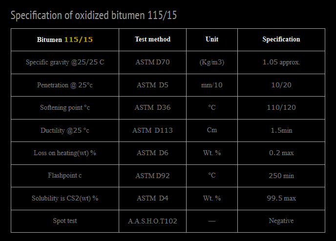

Description of Oxidized Bitumen 115/15 – Iran Bitumen Supply │ IBITMCO
Oxidized Bitumen 115/15 is a high‑performance industrial bitumen produced by blowing hot air through Bitumen Penetration Grade 60/70. This controlled oxidation process increases the bitumen’s softening point and decreases its penetration value, resulting in a semi‑solid, highly stable, and durable oxidized bitumen suitable for a wide range of industrial and construction applications. At Iran Bitumen Supply │ IBITMCO, Oxidized Bitumen 115/15 is manufactured through a specialized oxidation and modification process at approximately 230°C, transforming vacuum bottom feedstock into a product with a significantly higher penetration index. This grade is one of the most widely used oxidized bitumen types, and a major portion of our production capacity is dedicated to supplying Bitumen 115/15.
Oxidized Bitumen 115/15 exhibits:
- ✔ High softening point
- ✔ High flash point
- ✔ Excellent thermal stability
- ✔ Superior adhesion and waterproofing properties
- ✔ Solid consistency at ambient temperatures
These characteristics make it ideal for industrial applications requiring long‑lasting performance and resistance to heat, aging, and deformation.
Uses of Oxidized Bitumen 115/15
Oxidized Bitumen 115/15 supplied by Iran Bitumen Supply │ IBITMCO is widely used across multiple industries, including:
Construction & Civil Engineering
- ✔ Road construction
- ✔ Crack sealing and pavement repair
- ✔ Waterproofing and insulation
- ✔ Bitumen membrane sheet production
- ✔ Sealing and joint filling
Industrial Applications
- ✔ Bitumen coatings
- ✔ Paints, varnishes, and lacquers
- ✔ Adhesives and sealants
- ✔ Electrical laminates
- ✔ Pipe coating
- ✔ Corrosion protection
- ✔ Dust‑binding agents
- ✔ Rubber and plastic modification
- ✔ Oil‑well drilling fluids
- ✔ Hydraulic applications
Roofing & Building Materials
- ✔ Roofing shingles
- ✔ Built‑up roofing felts
- ✔ Roll roofing materials
- ✔ Mopping‑grade roofing asphalts
Oxidized Bitumen 115/15 is especially valued for its adhesive strength, waterproofing capability, and resistance to temperature fluctuations, making it a preferred choice in industrial and construction sectors.
Application Guidelines for Oxidized Bitumen 115/15
To ensure proper flow and viscosity, Bitumen 115/15 must be heated to approximately twice its softening point. Typically:
- ✔ Standard heating temperature: ~230°C
- ✔ If packaged in bitumen bags: an additional ~50°C may be required to melt the packaging
Surface Preparation
Before application, surfaces must be:
- ✔ Clean
- ✔ Dry
- ✔ Free of dust, loose particles, curing compounds, and irregularities
Failure to prepare the surface properly may reduce adhesion and performance.
Packaging Options for Oxidized Bitumen 115/15
At Iran Bitumen Supply │ IBITMCO, Oxidized Bitumen 115/15 is available in:
- ✔ Carton boxes
- ✔ PP bags
- ✔ Solid blocks for melting on‑site
These packaging formats ensure safe handling, easy transportation, and efficient melting at the job site.
Quality & Safety Guarantee – Oxidized Bitumen 115/15
Iran Bitumen Supply │ IBITMCO guarantees the quality of Oxidized Bitumen 115/15 through strict quality control procedures. We work with independent international inspection companies to verify the quality and quantity of each shipment during loading. Our QC team conducts batch‑wise testing before dispatch to ensure full compliance with ASTM standards. This ensures that every shipment meets the performance requirements demanded by industrial, construction, and waterproofing applications.
Supplier of Oxidized Bitumen 115/15 – Iran Bitumen Supply │ IBITMCO
With extensive experience in the global bitumen market, Iran Bitumen Supply │ IBITMCO supplies Oxidized Bitumen 115/15 to customers across Asia, Africa, Europe, and the Middle East. We offer flexible shipping options, including carton boxes, PP bags, and bulk formats, delivered to ports worldwide.
How to Order Oxidized Bitumen 115/15
To receive a quotation and order confirmation, please provide:
- ✔ Required quantity (MT)
- ✔ Preferred packaging type
- ✔ Destination port and country
- ✔ Incoterms (FOB, CFR, or CIF)
- ✔ Payment terms
Upon receiving your details, we will send a formal quotation, Proforma Invoice, loading plan, estimated delivery time, and documentation list.

Specification of Oxidized Bitumen 115/15